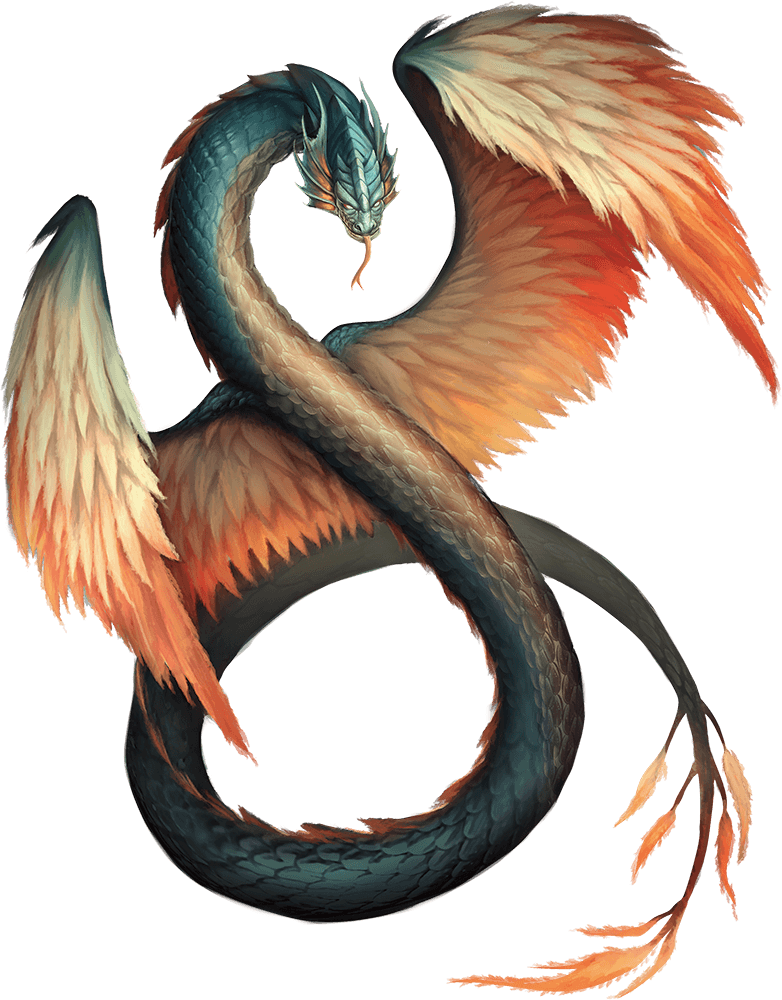
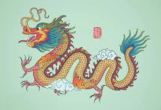
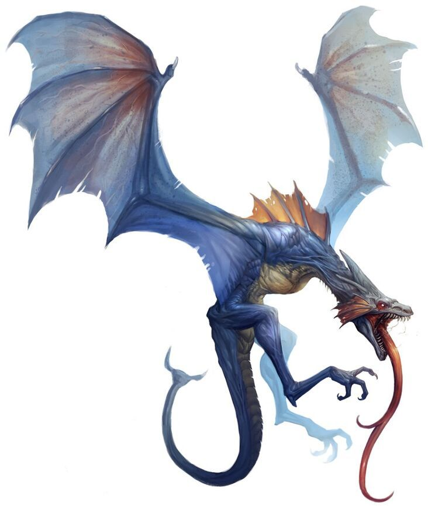
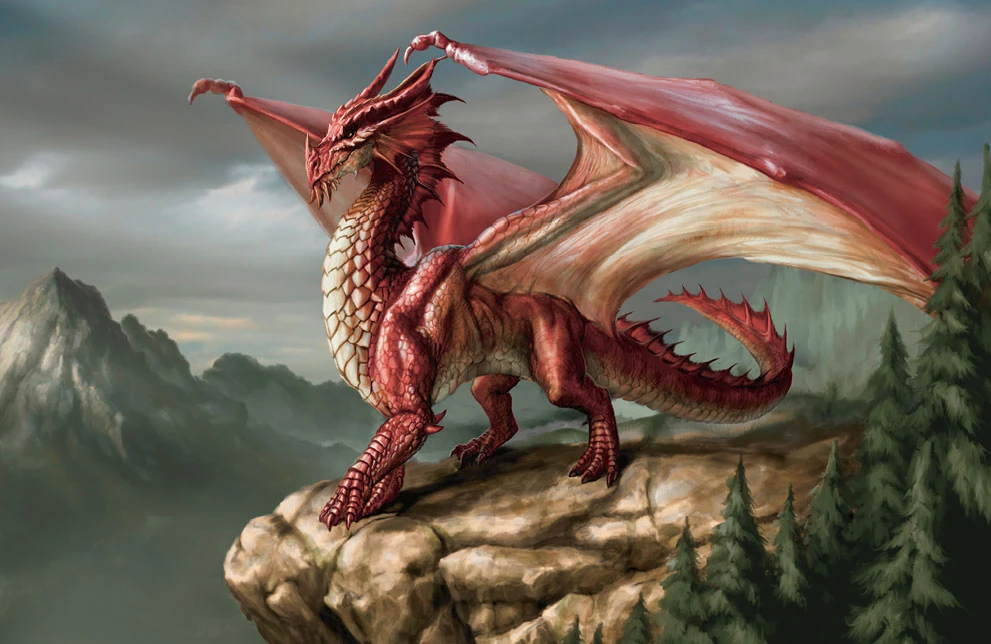
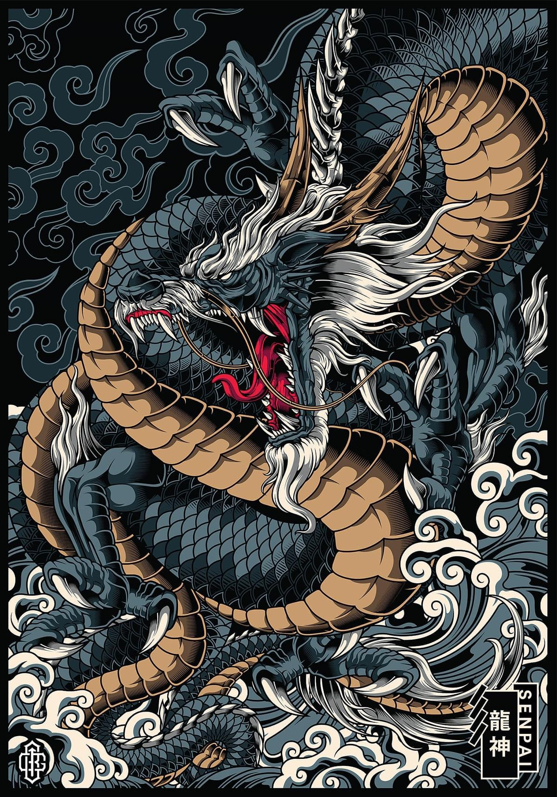

The Hydra!
The Hydra was a serpent-like water monster with nine heads that is often referenced in Greek mythology. It was an offspring of Typhon and Echidna bred by Hera to kill Hercules. It was Hercules responsibility to slay the beast during his twelve Labors for King Eurystheus..

Jörmungandr!
In Norse mythology, Jörmungandr (Old Norse: Jǫrmungandr) also known as the Midgard Serpent or World Serpent (Old Norse: Miðgarðsormr), is an unfathomably large and monstrous sea serpent or worm who dwells in the world sea, encircling the Earth (Midgard) and biting its own tail, an example of an ouroboros. As a result of his surrounding Midgard (the Earth), the beast is referred to as the World Serpent. Jörmungandr releasing his tail is one of the signs of the beginning of Ragnarök (the final battle of the world)

The Coatyl!
The Coatyl is a species of dragon with large, birdlike wings and no legs. It is native to the humid evergreen tropics of Thumos, as well as the Neacos Islands. Coatyls are known for being the only species of dragon that has evolved to have feathers.

The Chinese Dragon!
The Chinese Dragon also known as loong, is a legendary creature in chinese mythology, Chinese folklore, and Chinese culture at large. Chinese dragons have many animal-like forms such as turtles and fish, but are most commonly depicted as snake-like with four legs. Academicians have identified four reliable theories on the origin of the Chinese dragon: snakes, Chinese alligators, thunder worship and nature worship. They traditionally symbolize potent and auspicious powers, particularly control over water.

The Wyvern!
he Wyvern (sometimes spelled wivern) is a type of mythical dragon with two legs, two wings, and often a pointed tail. The wyvern in its various forms is important in heraldry, frequently appearing as a mascot of schools and athletic teams oo (chiefly in the United States, United Kingdom, and Canada). It is a popular creature in European literature, mythology, and folklore. Today, it is often used in fantasy literature and video games. The wyvern in heraldry and folklore is rarely fire-breathing, unlike other dragons.

The Red Dragon!
Medieval England English folklore portrays dragons as kidnapping maidens from castles, resulting in a battle with a hero. The hero then slays them and rescues the maiden. There is a good chance that people living in medieval England believed in dragons. This was obviously before the internet existed, so information spread through written chronicles and word of mouth. People believed that disease spread through poisoned air. Mainly affected were marshes, a habitat for dragons. One story features a dragon that terrorised Dunster in the Somerset levels, before it was banished by St Carantoc. The dragon was both terrifying and noble to people. Dragons feature on many coats of arms. This image of the dragon was commonly a lizard-like, winged creature, breaking from earlier tradition.
